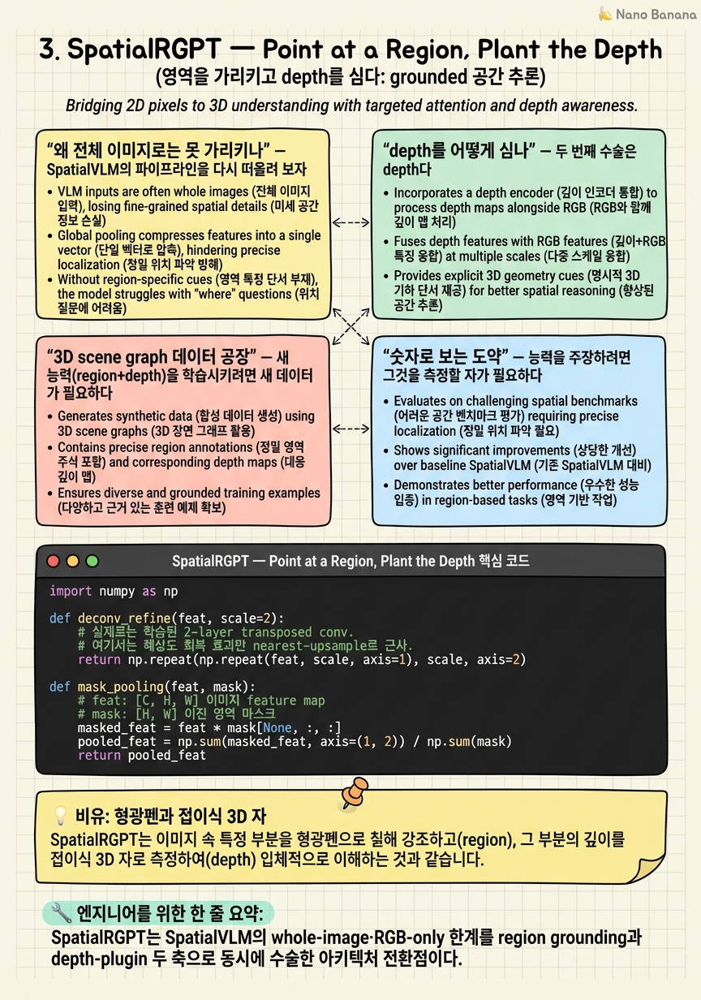

SpatialRGPT — Point at a Region, Plant the Depth
사용자가 창고 사진 위에 마우스로 두 개의 박스를 그린다. 하나는 지게차, 하나는 벽면 선반. 그리고 묻는다. "이 지게차가 저 선반에서 몇 미터 떨어져 있지?" 이전 장의 SpatialVLM은 이 질문 자체를 받을 수 없다. 전체 이미지 하나에 대한 답만 뱉을 뿐, '이것'과 '저것'을 가리킬 언어가 없기 때문이다.

🎯 학습 목표
- whole-image VLM이 왜 '이 물체 vs 저 물체' 관계 질의를 구조적으로 못 하는지 설명한다
- depth를 별도 connector로 주입하되 inference에서 depth가 없어도 무너지지 않게 만드는 설계 원리를 이해한다
- Grounding DINO→Metric3Dv2→camera calibration→3D scene graph로 이어지는 OSD 파이프라인의 각 단계 역할을 분해한다
- MaskPooling으로 region embedding을 뽑는 연산을 직접 구현하고, SpatialRGPT-Bench 수치가 무엇을 증명하는지 해석한다
2장에서 SpatialVLM은 공간 추론이 '데이터 문제'임을 증명했다. 인터넷 이미지에서 2B 규모의 spatial VQA를 합성해, 모델이 metric 거리·크기를 학습할 수 있음을 보였다. 그러나 두 개의 구멍이 남았다. 첫째, 질의 단위가 이미지 전체다. 화면에 물체가 여럿이면 '왼쪽 컵'과 '오른쪽 컵'을 지칭할 방법이 없다. 둘째, 입력이 RGB뿐이다. 거리는 결국 3D 기하인데, 모델은 2D 픽셀에서 depth를 암묵적으로 추측해야 한다.
SpatialRGPT(An-Chieh Cheng 등, NVIDIA·UCSD, NeurIPS 2024)는 이 두 구멍을 정면으로 메운다. (1) region grounding으로 임의의 마스크/박스를 토큰화해 LLM이 개별 물체를 가리킬 수 있게 하고, (2) depth-plugin으로 metric geometry를 언어 토큰 공간에 직접 심는다. 이 장의 제목이 '가리키고, 심다'인 이유다.
이 챕터는 코스의 아키텍처 전환점이다. RGB-only whole-image에서 region-grounded·depth-aware로 넘어가는 지점이며, 여기서 등장한 두 설계 패턴 — inference에서 사라져도 되는 depth-plugin, 그리고 3D scene graph를 자동으로 찍어내는 데이터 공장(OSD) — 은 이후 여러 논문의 참조 템플릿이 된다.
핵심 내용
왜 전체 이미지로는 못 가리키나
SpatialVLM의 파이프라인을 다시 떠올려 보자. 이미지 하나가 encoder를 거쳐 토큰이 되고, 질문은 그 이미지 '전체'에 대한 것이다. "컵이 접시보다 왼쪽에 있나?" 같은 질문은 화면에 컵과 접시가 각각 하나뿐일 때만 성립한다. 실제 장면은 그렇지 않다. 창고에는 지게차가 셋, 선반이 다섯 개 있다.
이 한계는 표면적 UX 문제가 아니라 표현의 문제다. 코스 전체를 관통하는 진단 — 서베이 Spatial Reasoning in MLLMs가 말하는 projection bottleneck — 은 2D encoder가 semantic alignment를 위해 토큰화하지, 개별 인스턴스의 기하를 보존하지 않는다는 데 있다. 모델이 '이 물체'를 붙잡을 손잡이(handle) 자체가 없다.
SpatialRGPT의 첫 수술은 그 손잡이를 만드는 것이다. 사용자가 준 마스크(또는 박스)를 image feature map 위에 얹어, 그 영역만의 embedding을 뽑아낸다. 구체적으로는 feature map을 두 층의 deconvolution으로 refine해 공간 해상도를 회복한 뒤, 마스크 영역의 feature를 평균 pooling한다. 이 MaskPooling 결과가 하나의 region token이 되어 LLM 입력에 삽입된다.
결과적으로 프롬프트는 "<region0>이 <region1>에서 얼마나 떨어져 있나?" 형태가 된다. LLM은 이제 서수(왼쪽/오른쪽)나 클래스명(컵/접시)에 의존하지 않고, 명시적 참조 토큰으로 특정 인스턴스를 지목한다. GPT-4V에 Set-of-Marks를 붙이는 우회로가 이 시기 유행했지만, SpatialRGPT는 region을 프롬프트 텍스트로 '설명'하는 대신 feature로 '주입'한다는 점에서 다르다.

depth를 어떻게 심나
두 번째 수술은 depth다. 거리·높이·크기는 근본적으로 3D 기하이므로, RGB만으로는 모델이 depth를 암묵 추정해야 한다. SpatialRGPT는 depth map을 아예 입력으로 받되, 이를 이질적 modality로 따로 처리하지 않고 영리하게 재사용한다.
설계의 골자는 이렇다. depth map은 RGB와 '같은' shared image encoder를 통과해 depth feature map이 된다. 그다음이 핵심 분기점이다. RGB feature는 RGB connector로, depth feature는 별도의 depth connector로 LLM 토큰 공간에 매핑된다. 두 connector를 분리하는 이유는 cross-modal interference를 막기 위함이다. 하나의 connector에 두 modality를 섞으면 서로의 표현을 오염시킨다.
가장 중요한 트릭은 초기화와 학습 스케줄에 있다. depth connector는 무작위가 아니라 RGB connector의 가중치로 초기화되고, spatial QA 데이터에서만 학습된다. 이 두 조건이 합쳐지면 우아한 성질이 생긴다. depth가 주어지지 않은 inference 상황에서도 모델이 무너지지 않는다. depth connector가 RGB connector의 '이웃'에서 출발해 spatial 과제로만 특화되었기 때문에, depth 입력이 빠져도 RGB 경로가 여전히 합리적인 답을 낸다. 이것이 plugin-that-degrades-gracefully 패턴이다.
region 처리는 이 두 스트림 위에서 동일하게 작동한다. RGB feature map과 depth feature map 각각에서 같은 마스크로 MaskPooling을 수행하면, 같은 영역에 대한 semantic embedding과 geometric embedding을 함께 얻는다. LLM은 "이 region은 이렇게 생겼고(RGB), 이만큼 멀다(depth)"를 한 토큰 묶음으로 받는다.
한 문장으로 요약하면, depth는 새 modality의 무거운 별도 tower가 아니라, 공유 encoder에 얹은 얇고 탈착 가능한 plug다. 다음 4장의 SpatialBot은 여기서 한 걸음 더 나아가, depth를 feature로 녹이는 대신 아예 읽고 질의하는 도구로 만든다.
3D scene graph 데이터 공장
새 능력(region+depth)을 학습시키려면 새 데이터가 필요하다. SpatialVLM의 합성 레시피는 whole-image 거리 QA였지, 개별 region 사이의 grounded 관계가 아니었다. SpatialRGPT는 이를 위해 Open Spatial Dataset(OSD)이라는 자동 파이프라인을 만든다.
파이프라인은 raw 2D 이미지에서 3D 구조를 복원하는 순서로 흐른다. 먼저 Grounding DINO가 물체를 검출하고 segmentation으로 인스턴스 마스크를 얻는다. 다음 Metric3Dv2가 각 픽셀의 metric depth를 예측한다. 여기가 결정적이다. relative가 아닌 metric depth라야 '3.2m'처럼 절대 거리를 말할 수 있다. 이어 WildCamera/PerspectiveFields로 카메라 intrinsic을 추정하고 장면을 canonical한 자세로 정규화한다. 카메라를 모르면 픽셀을 3D로 unproject할 수 없기 때문이다.
이렇게 얻은 per-instance 점구름은 노이즈가 많으므로 DBSCAN으로 outlier를 제거한다. 정제된 점구름 각각에 axis-aligned 3D bounding box를 씌우면, 물체들의 3D 위치·크기·상호관계를 담은 3D scene graph가 완성된다. 이 scene graph가 곧 ground-truth의 원천이다. 두 박스 사이 거리, 어느 것이 더 큰지, 무엇이 앞에 있는지를 그래프에서 곧바로 읽어낸다.
마지막으로 이 grounded fact를 자연어 QA로 변환한다. 규칙 기반 template로 8M쌍을, 그리고 Llama3-70B로 약 700K쌍의 복잡한 multi-step reasoning QA를 생성한다. 최종 규모는 1M 이미지, 5M region, 8.7M grounded spatial concept에 이른다. 이 '2D→3D scene graph→QA' 공장은 이후 여러 후속 연구가 그대로 참조하는 템플릿이 된다.
숫자로 보는 도약
능력을 주장하려면 그것을 측정할 자가 필요하다. SpatialRGPT-Bench는 657개의 정성 pair와 749개의 정량 pair, 88개 클래스로 구성되며, 실내·실외·시뮬레이션을 아우르는 ground-truth 3D cuboid 주석을 최초로 제공하는 벤치마크다. 이전까지 공간 추론 평가는 사람이 눈대중으로 채점하거나, metric ground-truth가 없어 상대 비교에 그쳤다.
정성 평가는 관계의 방향성(왼쪽/오른쪽, 위/아래, 앞/뒤 등)을 맞히는 success rate다. 정량 평가는 거리·크기의 절대 상대 오차 \(\delta = |d_{pred}-d_{gt}|/d_{gt}\)로 채점한다. 이 metric은 예측이 클수록 페널티가 커지므로, 그럴듯한 언어가 아니라 실제 수치의 정확도를 강제한다.
결과는 명확한 도약을 보인다. 정성에서 SpatialRGPT는 91.78%로, GPT-4V의 58.14%, SoM을 붙인 GPT-4V의 54.33%, LLaVA-34B의 43.98%를 큰 격차로 앞선다. 정량에서는 depth를 켠 SpatialRGPT-Depth가 절대 상대 오차 0.33으로, GPT-4V 0.92·LLaVA 0.76 대비 오차를 절반 이하로 줄인다. depth-plugin이 metric 정확도에 직접 기여함을 보여주는 대목이다.
주의할 해석 포인트가 하나 있다. 정량 오차 0.33은 여전히 30% 남짓의 상대 오차다. metric 거리 추정은 이 논문으로 '풀린' 것이 아니라 '가능함이 증명된' 단계다. 이 잔여 오차가 이후 8장 DepthVLM 계열이 depth를 언어 인터페이스 안으로 더 깊이 끌어들이려는 동기가 된다.
💡 비유로 이해하기
whole-image VLM은 사진 전체를 놓고 '이 사진 어때?'만 물을 수 있는 감상자다. SpatialRGPT의 region grounding은 그 사진에 형광펜을 쥐여 주는 것과 같다. "여기(형광펜 A)와 저기(형광펜 B)"라고 표시하면, 이제 대화는 특정 두 지점에 대한 것이 된다. 클래스명이나 '왼쪽 것' 같은 모호한 서술이 필요 없다.
depth-plugin은 그 감상자의 주머니에 접이식 3D 자를 넣어 주는 격이다. 자가 있으면(depth 입력) '3.2m'라고 정확히 잰다. 자를 안 챙긴 날(depth 없음)에도 눈대중으로 대략은 답한다. 결정적으로, 이 자는 원래 쓰던 눈(RGB connector)의 사용법을 물려받아 만들어졌기에, 자가 없다고 감상자가 갑자기 앞을 못 보게 되지는 않는다. 이것이 graceful degradation이다.
OSD 데이터 공장은 이 감상자를 훈련시킨 학원이다. 수백만 장의 평범한 사진을 자동으로 3D 도면(scene graph)으로 바꿔, '두 지점 사이 거리는 이만큼'이라는 정답지를 사람 손 없이 대량으로 찍어냈다.
💻 코드 예시
SpatialRGPT의 region grounding 핵심 연산인 MaskPooling을 numpy로 구현한다. feature map [C,H,W]와 이진 region 마스크가 주어지면, 마스크가 덮은 위치의 feature를 masked average pooling해 하나의 region embedding [C]로 만든다. 실제 모델은 pooling 전에 2-layer deconvolution으로 feature map을 upsample해 공간 해상도를 회복하는데, 여기서는 그 refine 단계를 최근접 업샘플로 흉내 냈다.
import numpy as np
def deconv_refine(feat, scale=2):
# 실제로는 학습된 2-layer transposed conv.
# 여기서는 해상도 회복 효과만 nearest-upsample로 근사.
return np.repeat(np.repeat(feat, scale, axis=1), scale, axis=2)
def mask_pooling(feat, mask):
# feat: [C, H, W] 이미지 feature map
# mask: [h, w] 이진 region 마스크 (feat과 크기 달라도 됨)
C, H, W = feat.shape
if mask.shape != (H, W): # 마스크를 feat 격자에 맞춰 샘플
ys = np.linspace(0, mask.shape[0]-1, H).astype(int)
xs = np.linspace(0, mask.shape[1]-1, W).astype(int)
mask = mask[np.ix_(ys, xs)]
m = mask.astype(np.float32)
denom = m.sum()
if denom == 0: # 빈 영역 방어
return np.zeros(C, dtype=feat.dtype)
# 마스크로 가린 위치만 평균 -> region embedding
return (feat * m[None]).sum(axis=(1, 2)) / denom
np.random.seed(0)
feat = np.random.randn(256, 24, 24).astype(np.float32) # encoder feature
mask = np.zeros((24, 24), np.uint8); mask[6:14, 8:18] = 1 # 지목한 region
emb = mask_pooling(feat, mask)
print('region embedding:', emb.shape, '| mask px:', int(mask.sum()))
refined = deconv_refine(feat, 2) # 2x 해상도 회복
big = np.zeros((48, 48), np.uint8); big[12:28, 16:36] = 1
print('refined map:', refined.shape,
'| refined region embedding:', mask_pooling(refined, big).shape)mask_pooling은 feature map에 마스크를 element-wise 곱해 region 밖을 0으로 만든 뒤, 채널별 합을 마스크 픽셀 수로 나눈다. 곧 masked average pooling이며, 결과는 그 영역의 semantic을 압축한 [C] 벡터 하나다. 이 벡터가 <region_i> 토큰이 되어 LLM에 들어간다. depth 스트림에도 같은 마스크로 이 함수를 한 번 더 적용하면 geometric embedding을 얻는다. deconv_refine은 pooling 전 feature 해상도를 회복해, 작은 물체 마스크가 격자 몇 칸으로 뭉개지지 않게 한다. 빈 마스크에 0 벡터를 돌려주는 방어는 학습 중 라벨 노이즈로 마스크가 비는 경우를 막는다.
🏭 현업에서의 평가
✅ 시니어가 보는 것
- 새 modality(depth)를 별도 tower로 늘리지 않고 shared encoder를 재사용하면서 connector만 분리한 판단, 그리고 그 이유(cross-modal interference 차단 + 학습 비용 절감)를 설명할 수 있는가
- depth connector를 RGB connector에서 초기화하고 spatial QA로만 학습시켜 graceful degradation을 얻는 설계를, 단순 fine-tuning 트릭이 아니라 배포 안정성 관점에서 해석하는가
- OSD 파이프라인의 각 컴포넌트(Metric3Dv2, 카메라 calibration, DBSCAN)가 왜 그 순서로 필요한지, 하나를 빼면 무엇이 깨지는지 추론하는가
⚠️ 레드 플래그
- depth를 그냥 4번째 채널로 concat하면 되지 않느냐고만 말하고, 별도 connector와 초기화 전략이 필요한 이유를 설명하지 못함
- 정성 91.78% 같은 성공률 숫자만 외우고, 정량 절대 상대 오차 0.33이 여전히 30% 오차라는 한계를 해석하지 못함
- OSD를 'GPT로 QA 뽑은 것'으로만 이해하고, metric depth·카메라 정규화 없이는 절대 거리 ground-truth가 성립하지 않는다는 점을 놓침
🎤 예상 인터뷰 질문 (클릭하면 모범답안)
depth를 RGB에 4채널로 concat하지 않고 별도 connector로 주입한 이유는? 그 대가는 무엇인가?
concat은 encoder 초입에서 두 modality를 강제로 섞어 cross-modal interference를 일으키고, depth가 없는 입력에 대해 아예 forward가 깨진다. SpatialRGPT는 shared encoder는 재사용하되 RGB feature와 depth feature를 각자의 connector로 LLM 공간에 매핑해 표현 오염을 막는다. 대가는 파라미터·경로가 늘어나는 것이지만, depth connector를 RGB connector에서 초기화하고 spatial QA로만 학습해 depth 없는 inference에서도 무너지지 않는 graceful degradation을 얻으므로 배포상 이득이 훨씬 크다.
OSD에서 Metric3Dv2와 카메라 calibration을 둘 다 두는 이유는? 하나만 있으면 왜 안 되나?
Metric3Dv2는 픽셀별 '절대' depth를 주어 3.2m 같은 metric 답의 근거가 되지만, depth만으로는 픽셀을 3D 좌표로 unproject할 수 없다. camera intrinsic이 있어야 (u,v,depth)를 실제 (X,Y,Z)로 역투영하고 장면을 canonical 자세로 정규화할 수 있다. 카메라만 있고 metric depth가 없으면 상대 스케일만 알아 절대 거리를 말할 수 없고, depth만 있고 카메라가 없으면 3D scene graph의 기하가 왜곡된다. 두 단계가 함께 있어야 axis-aligned 3D box와 그 사이 거리를 ground-truth로 뽑을 수 있다.
region grounding은 GPT-4V에 Set-of-Marks를 붙이는 방식과 무엇이 다른가?
SoM은 region을 이미지 위 시각 마커와 텍스트 라벨로 '설명'해 LLM이 다시 픽셀에서 읽게 만드는 우회로다. 반면 SpatialRGPT는 마스크로 feature map을 MaskPooling해 그 영역의 embedding을 직접 region token으로 LLM에 주입한다. 정보가 텍스트를 거치지 않고 feature 수준에서 들어가므로 인스턴스 지시가 더 정확하고, depth 스트림에도 같은 마스크를 적용해 geometric embedding까지 함께 붙일 수 있다. 벤치마크에서도 SpatialRGPT 91.78% 대 GPT-4V+SoM 54.33%로 격차가 크다.
✨ 핵심 요약
두 구멍을 메운다
SpatialRGPT는 SpatialVLM의 whole-image·RGB-only 한계를 region grounding과 depth-plugin 두 축으로 동시에 수술한 아키텍처 전환점이다.
region은 설명이 아니라 주입
deconv refine 후 MaskPooling으로 뽑은 region embedding을 토큰으로 직접 넣어, LLM이 클래스명·서수 없이 특정 인스턴스를 <region_i>로 지목한다.
탈착 가능한 depth-plugin
depth는 shared encoder를 재사용하고 RGB에서 초기화된 별도 connector로 들어간다. spatial QA로만 학습해 depth가 없는 inference에서도 graceful degradation을 보인다.
connector 분리 = interference 차단
RGB와 depth를 별도 module로 refine하는 이유는 두 modality가 서로의 표현을 오염시키는 cross-modal interference를 막기 위함이다.
3D scene graph 데이터 공장
OSD는 Grounding DINO→Metric3Dv2→camera calibration→DBSCAN→3D scene graph로 절대 거리 ground-truth를 자동 생성한다. 1M 이미지·5M region·8.7M concept 규모.
metric 정량 오차를 절반 이하로
SpatialRGPT-Bench 정성 91.78%(GPT-4V 58.14%), 정량 절대 상대 오차 0.33(GPT-4V 0.92)으로, ground-truth 3D cuboid 기반 최초의 metric 평가에서 도약을 입증한다.
'풀림'이 아니라 '가능함'
정량 오차 0.33은 여전히 30%대 상대 오차다. metric 거리 추정은 증명 단계이며, 이 잔여 오차가 depth를 언어 안으로 더 끌어들이는 후속 흐름의 동기가 된다.
- An-Chieh Cheng et al. (2024). SpatialRGPT: Grounded Spatial Reasoning in Vision Language Models. NeurIPS 2024. arXiv:2406.01584